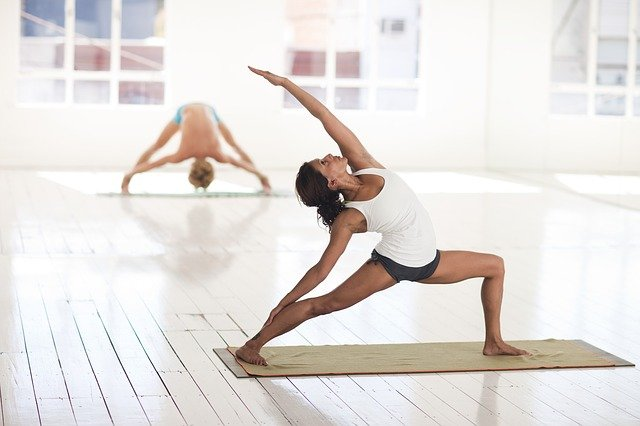

What is Yoga?
Yoga is a technology that uses the knowledge on the functions of the mind and body to create harmony, health, and spiritual connection.
It’s practice combines breath exercises (pranayama), Yoga positions (asanas), Bhandas (body locks), Mudras (hand positions) and meditation
Yoga has many benefits. At the beginning it starts with an overall sense of wellbeing, followed by an improvement of some physical, and health related issues, if there are any, but when practice regularly one start noticing a clear, and quieter mind.
Nowadays, only a few can enjoy a balanced and controlled mind. The benefits of a balanced mind can create a tremendous impact in a one’s life, and the ripple’s effects keep unfolding as the person’s practice deepens.
I started to practice Yoga as a hobby, and from the very first class it make me feel great. As the time passed, my practice started to deepen, and soon I discovered that practicing Yoga was not only bringing me health and flexibility, but it was balancing my mind and preparing it for meditation.
“Meditation can give you that which nothing else can give you. It introduces you to yourself”
– Swami Rama.